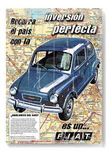

Carácterísticas principales:
- Motor: Fiat 4 en línea.
- Cilindrada: 866 cc.
- Potencia: 34 HP.
- Ciclo: 4 tiempos, árbol de levas lateral, br válvulas a la cabeza.
- Ubicación: Trasero Longitudinal.
- Transmisión: 4 velocidades.
- Velocidad máxima: 125 Km/h.
- Alternador.

El día que obtuve un fiat 600R 1970
Esta historia se remonta a cuando yo cumpli 18 años. Fué ahí donde mis padres decieron regalarme mi primer auto, y no fue mas que el fitito. Al principio pensaba que no podía hacer mucho... pero con el correr del tiempo me di cuenta que podía hacer muchas más cosas de las que pensaba. Tanto en diseño, como en performance, las posibilidades eran infinitas, su mecánica y todo el conjunto, hacen que sea y se convierta en un juguete con el cual aprendés de todo. Las miradas nunca faltaron y la ayuda menos, fué y será uno de los autos que ganó un gran lugar en su historia, y de echo, más fieles que los autos actuales.